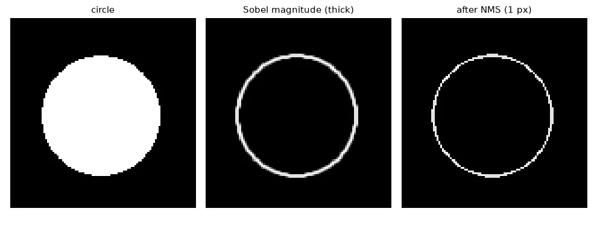
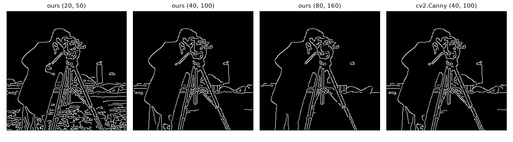

What makes a good edge detector#
John Canny (1986) wrote down three criteria: detect real edges and nothing else, localise them where they really are, and give one response per edge. Sobel + threshold fails the last two: its edges are several pixels thick and broken. Canny's algorithm fixes this in five steps.
1–2. Smooth, then take the gradient#
blurred = cv2.GaussianBlur(img.astype(np.float32), (5, 5), sigmaX=1.4)
gx = cv2.Sobel(blurred, cv2.CV_32F, 1, 0, ksize=3)
gy = cv2.Sobel(blurred, cv2.CV_32F, 0, 1, ksize=3)
magnitude = np.hypot(gx, gy)
angle = np.rad2deg(np.arctan2(gy, gx)) % 180 # direction, folded into [0, 180)
The blur (\(\sigma \approx 1.4\)) controls the scale: more blur, fewer and smoother edges. We keep the direction folded into \([0°, 180°)\), because an edge and its opposite are the same line.
3. Non-maximum suppression#
A thick ridge of gradient magnitude should become a 1-pixel line at its crest. For each pixel, look at its two neighbours along the gradient direction (across the edge); if it is not at least as large as both, it is not the crest — set it to zero. The direction is quantised to the 4 neighbour axes:
| Gradient angle | Edge runs | Compare with |
|---|---|---|
| ≈ 0° | vertically | left and right |
| ≈ 45° | diagonally | top-left and bottom-right |
| ≈ 90° | horizontally | above and below |
| ≈ 135° | diagonally | top-right and bottom-left |
def non_max_suppression(mag, ang):
"""Keep a pixel only if it is a local maximum along the gradient direction."""
h, w = mag.shape
out = np.zeros_like(mag)
for i in range(1, h - 1):
for j in range(1, w - 1):
a = ang[i, j]
if a < 22.5 or a >= 157.5: # gradient ~horizontal -> compare left/right
n1, n2 = mag[i, j - 1], mag[i, j + 1]
elif a < 67.5: # ~45°: image y grows downwards, so this diagonal
n1, n2 = mag[i - 1, j - 1], mag[i + 1, j + 1]
elif a < 112.5: # ~vertical -> compare up/down
n1, n2 = mag[i - 1, j], mag[i + 1, j]
else: # ~135°
n1, n2 = mag[i - 1, j + 1], mag[i + 1, j - 1]
if mag[i, j] >= n1 and mag[i, j] >= n2:
out[i, j] = mag[i, j]
return out
Two bugs I made the first time
I wrote np.arctan2(gx, gy) instead of np.arctan2(gy, gx), which mirrors every angle around 45° and compares the wrong neighbours. And in image coordinates y grows downwards: a gradient at +45° points to the bottom-right, so its neighbours are \((i-1, j-1)\) and \((i+1, j+1)\). Test on a circle (below): every direction appears once.

4. Double threshold#
One threshold cannot be both strict enough to reject noise and permissive enough to keep the faint part of a real edge. Use two: pixels above high are strong edges, pixels between low and high are weak (maybe), the rest are dropped.
STRONG, WEAK = 255, 128
def double_threshold(nms, low, high):
out = np.zeros(nms.shape, np.uint8)
out[nms >= high] = STRONG
out[(nms >= low) & (nms < high)] = WEAK
return out
5. Hysteresis#
A weak pixel is kept only if it is connected to a strong one through a chain of weak pixels. This is a flood fill: start from every strong pixel and grow into weak neighbours.
def hysteresis(labels):
"""Weak pixels survive only if they are connected (8-neighbourhood) to a strong one."""
out = np.where(labels == STRONG, 255, 0).astype(np.uint8)
queue = deque(zip(*np.nonzero(labels == STRONG)))
h, w = labels.shape
while queue: # flood fill starting from every strong pixel
i, j = queue.popleft()
for di in (-1, 0, 1):
for dj in (-1, 0, 1):
y, x = i + di, j + dj
if 0 <= y < h and 0 <= x < w and labels[y, x] == WEAK and out[y, x] == 0:
out[y, x] = 255
queue.append((y, x))
return out
Checking only the 8 immediate neighbours of each weak pixel once is not enough — a weak segment ten pixels long would only keep its first pixel. On this image the single-pass version keeps 3021 edge pixels, the flood fill 3464.

Putting it together, and OpenCV#
def canny(img, low, high, sigma=1.4):
f = cv2.GaussianBlur(img.astype(np.float32), (5, 5), sigma)
gx = cv2.Sobel(f, cv2.CV_32F, 1, 0)
gy = cv2.Sobel(f, cv2.CV_32F, 0, 1)
ang = np.rad2deg(np.arctan2(gy, gx)) % 180
return hysteresis(double_threshold(non_max_suppression(np.hypot(gx, gy), ang), low, high))
# OpenCV: blur yourself, then give the two thresholds (L2gradient=True uses the true magnitude)
edges_cv = cv2.Canny(cv2.GaussianBlur(img, (5, 5), 1.4), 40, 100, L2gradient=True)
cv2.Canny does steps 2–5 (do the blur yourself), and expects low and high on the same scale as the Sobel magnitude. With L2gradient=True it uses the true magnitude like we do. Our result and OpenCV's agree on 99.8 % of the pixels.

Exercises#
- Make the thresholds automatic:
high = 0.33 * percentile(magnitude, 90),low = high / 2.5. Does it work onrue_rouen.jpg? - Vectorise non-maximum suppression with four boolean masks (one per direction) and
np.roll. - Implement hysteresis with
cv2.connectedComponentson the weak-or-strong mask: keep every component that contains a strong pixel. Compare with the flood fill.